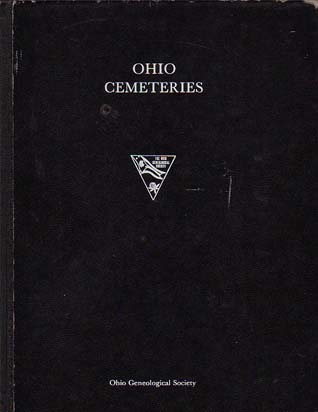

In my research I found a few sources extremely helpful. Check them out for a helping hand in exploring forgotten Ohio.
Haunted Ohio I, II, III, and IV
By Chris Woodyard
This four-book series by Chris Woodyard contains bits and pieces of hundreds of ghost legends from all over the state of Ohio. Both well-known ghost stories and lesser-known legends are covered here. Especially cool is the "Fright Bites" section at the end of the latter two books. Check them out.

Ghosts
By Randy McNutt
This is a great book--a kind of travel journal focusing on "Ohio's haunted landscapes, lost arts, and forgotten places." McNutt visits many ghost towns and brings them back to life with his vivid renderings of what life must have been like. He knows how to research and how to talk to people. The book's only weakness is when the author gives a saccharine portrait of his hometown; McNutt is from Hamilton, bedroom to Cincinnati and hardly a haunted landscape or a forgotten place. But overall this is a highly readable and enjoyable book that makes you want to get in your car and go to the same places he does.

Center for Ghost Town Research in Ohio
Organization out of Sunbury which researches and compiles information on Ohio ghost towns on a county-by-county basis. Their books are available by mail order and are well-worth the money. The Center is run by the Helwig family, and it occupies part of a store front on the eastern edge of Sunbury's town square. They don't have a website, but you can contact them at this address:
The Center for Ghost Town Research in Ohio
6 South Vernon Street
PO Box 616
Sunbury, Ohio 43074
740-965-2819
Ohio Cemeteries
This book, published by the Ohio Genealogical Society, lists every cemetery in the state of Ohio. Yes, it's true. Every one that existed before 1978, that is; the book was published in that year. Convenient maps and directions make this a great tool for discovering cemeteries you never knew existed.

Forgotten Columbus
This is the book I had published in spring 2002. It showcases different places in Columbus as they appear in historical photographs, as well as what became of them after the city stopped using them. You can buy it from the publisher at ArcadiaPublishing.com, or via Amazon.com. It's also available in just about any bookstore in the state of Ohio.

Session 9
Okay, this isn't a source, exactly. But if you like abandoned buildings and ghost stories, as well as good psychological horror movies, rent this one. It's one of the scariest movies I've seen--and it features the abandoned Danvers State Hospital in Massachusetts.

Back